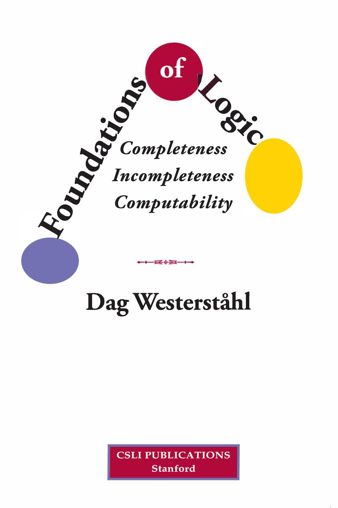

Westerståhl: Foundations of Logic – Completeness, Incompleteness, Computability

Dag Westerståhl’s Foundations of Logic: Completeness, Incompleteness, Computability is, by some margin, the most attractively written book at its level that I have newly encountered for some years.
The book is based on lecture courses give at Stockholm University and latterly at Tsinghua University, Beijing, and evidently reflects long teaching experience. Especially in the first two Parts of the book, the expositional choices are very well-judged, and the balance between motivational chat and worked-through formal details seems just right to me. Many student readers should find this book quite excellent for self-study. (Long-time readers of this blog will know that I’m not exactly over-quick to heap praise like this!)
The book was published by CSLI (distributed by the University of Chicago Press) in January 2024, ISBN 978-1684000005. You should certainly warmly recommend it to your local university or college library. For some reason, Amazon and others still quite mis-report the page length as 80pp.: in fact it is xiv + 451 pages, so the paperback price (§45, £36 from Waterstones) is by current standards pretty reasonable. Though, as we will see, it is a great pity that the author seems not to have come to an arrangement which makes the PDF freely downloadable.
In just a little more detail, Part I (‘Background’, 78 pp.), introduces propositional and FOL languages, and the idea of interpretations and semantic consequences, and then gives both a natural deduction proof system (Gentzen-style) and a Hilbert proof system. Part II (‘Completeness’, 80 pp.) gives soundness and completeness theorems for propositional logic and FOL, and then there is a chapter on the L-S theorems, compactness, and a smidgin of model theory. Part III (‘Incompleteness’, 134 pp.) discusses primitive recursive functions and their representability, Peano arithmetic, arithmetization, and Gödel’s Theorems. Part IV (‘Computability’, 114 pp.) adds chapters on decidability, undecidability and a modest amount more computability theory. There is an Appendix (34 pp.) on sets and functions, etc., for those that need it.
So this is a very substantial book. But Parts I and II in particular strike me as admirably well-paced, to my mind neither over-packed with detail, nor tediously slow-moving.
A little more detail on Parts I and II. After an inviting, reader-friendly, Introduction (Ch. 1), Part I has two substantial chapters, the first one (Ch. 2) introducing the syntax and semantics of propositional logic and then of FOL. This is done conventionally, in that we get the usual Tarski-style story, with the semantics done via assignments of objects to all variables at once in the usual way, interpreting wffs with free variables. So, in the usual way, we need slightly messy stories about allowable substitutions avoiding variable-capture, slightly messy notation for handling assignments to variables, etc. However, this is all expounded particularly clearly, with motivations at various points very well explained. (There’s perhaps just a hint in §3.2 that we could do things differently, in the way I myself would prefer, using a supply of special symbol constants-as-parameters, rather than making constants or variables do double duty — and then we can assign parameters temporary interpretations one at a time, just on an as-needed basis. But I can of course see the virtues of sticking to the conventional Tarskian line.)
Then Ch. 3 introduces two proof systems, Gentzen-style natural deduction and a minimalist, two-connective, Hilbert-style system. I think I would probably have spent just two or three more pages giving more examples of Gentzen-style proofs, showing tactics for building up proof-trees in natural ways (to re-inforce the advertised claim that this really is a natural deduction system). But still, this is again all very well done, with possible stumbling blocks — e.g. the use of vacuous discharge — nicely elucidated. The chapter finishes particularly helpfully with an outline proof that the two proof systems march in step, warranting the same deductions.
Part II begins with a short chapter (Ch. 4) proving the completeness of the Hilbert proof system for propositional logic, using maximal consistent sets and Lindenbaum’s Lemma. As in previous (and future!) chapters, there are excellent exercises, including in this case ones exploring another completeness proof and presenting the interpolation lemma for PL. Then, closely following that chapter’s overall structure, we get a short chapter (Ch.5) proving the completeness theorem for FOL using Henkin’s method — very sensibly doing the proof for FOL without identity first, before in the final section of chapter complicating the story to handle identity. I wonder if that last section is just a bit denser than it needs to be — but overall, again, this seems quite excellently well done.
The rest of Part II concludes with a significantly longer chapter (Ch. 6) titled, simply, ‘Model theory’. The first eight sections introduce a handful of predictable entry-level topics: more ideas about structures, about isomorphisms between structures, notions of definability, the compactness theorem (as a corollary of completeness) and some of its applications, and the Löwenheim-Skolem theorems. The remaining sections are more challenging, and could well be skipped on a first reading. §6.9 reflects Westerstähl’s interest in generalized quantifiers and quantifiers in natural language. §6.10 is on Ehrenfeucht–Fraïssé games. §6.11, ambitiously, is on Lindström’s Theorem.
Suppose we stop before those last three sections (though take in the still-relevant end-of chapter exercises). Then what we have before us is a book-within-a-book — Westerståhl’s 150 page introduction to FOL. There are, of course, oodles of books introducing FOL (and maybe covering a lot more). However, for one reason or another, many respectable texts on FOL can be difficult to recommend very warmly for self-study (over-doing the “rigour”, under-doing the motivational chat, choosing a horrible deductive proof system, etc., etc.). Against this background, the first two parts of Foundations of Logic do seem to me to stand out as providing a particularly attractive option.
A little more detail on Parts III and IV. Again, there are many more books which introduce formal arithmetic, incompleteness, and some entry-level computability theory. But this time, we are already rather generously supplied with a number of particularly accessible and enjoyable options taking varying paths through the material; and I’m not sure that Parts III and IV of Westerståhl’s book trump the alternatives. Which is not to deny that the book continues to be very attractively written, well-organized with a lot of signposting. In particular, Westerståhl does a very good job in signalling what are the Big Ideas, and what is the hack work required to confirm that e.g. primitive recursive functions are representable in PA, or that syntax is sufficiently arithmetizable, etc. It then becomes a judgment call just how many of the tedious under-the-bonnet details you really need to go into.
In fact, the particular path to the incompleteness results that Westerståhl takes closely resembles the one in my own IGT (which gets a friendly mention in his preface). But at various points he goes just a little more into the nitty-gritty detail than I do — more, obviously enough, than I judged was necessary. And, despite the signposting, I can well imagine some student readers occasionally losing orientation. So (what a surprise!) if you want to follow our path to Gödel’s Theorems — and there are alternatives — I’d still recommend starting with IGT for self-study. Westerståhl’s Parts III and IV would then make for quite excellent follow-up reading to consolidate understanding.
Part III (‘Incompleteness’) comprises six chapters. Ch. 7 is a very nice chapter, outlining what is to come — and indeed could be read stand-alone for preliminary orientation on incompleteness and computability, whatever you go on to read as your main text(s). Ch. 8 is about primitive recursive functions. Ch. 9 introduces first-order Peano Arithmetic. Ch. 10 establishes the representability of p.r. functions. Ch. 11 is on the arithmetization of syntax. So far so good, if sometimes unnecessarily detailed? Then, the target of this Part, Ch. 12 is a distinctly action-packed, indeed over-busy, forty-page chapter on incompleteness (IGT takes over twice as many pages to cover much of the same material as in this chapter, and I really think is all the better for it as a text for self-study by beginners).
Part IV (‘Computability’) has three chapters. Ch. 13 is on Turing machines, recursive functions and decidability. Ch. 14 is on undecidability of extensions of PA, of FOL, of the halting problem (so these two chapters correspond to the much of final half-dozen chapters of IGT). And then Ch. 15 dips its toes into computability theory (occasionally going rather beyond anything in IGT, e.g. in introducing the s-m-n theorem, creative sets, etc.). All good stuff, and I should certainly note again that the end-of-chapter Exercises — as earlier in the book — continue to be really excellent.
These Parts perhaps wouldn’t be my recommended first entry-point for self-study of this material. However, those who would prefer a somewhat brisker trek along much the same path as IGT, taking in a few extra sights along the way, will find Westerståhl’s book an admirable guide.